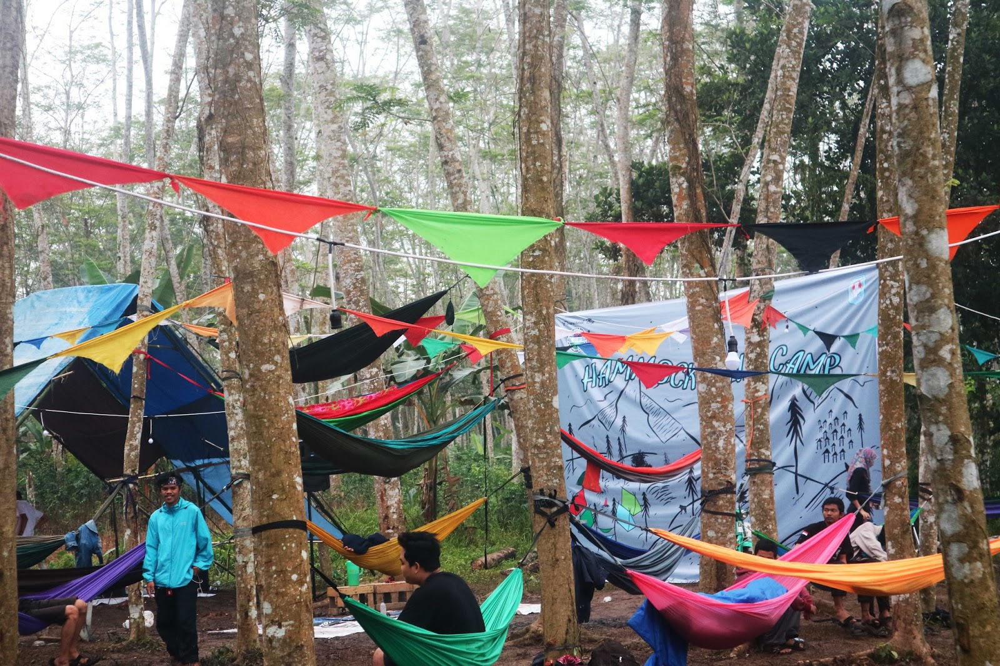

Hutan Albasia 
Hutan Albasia merupakan tempat wisata yang kental dengan nuansa alam dan asri. Lokasinya berada di Desa Kuala Dua, Kecamatan Sungai Raya Kabupaten Kubu Raya, Kalimantan Barat. Hutan albasia ini memiliki pohon-pohon yang mengelilingi tanah yang kurang lebih dari 3 hektare membuat para pengunjung merasakan suasana alam yang indah.